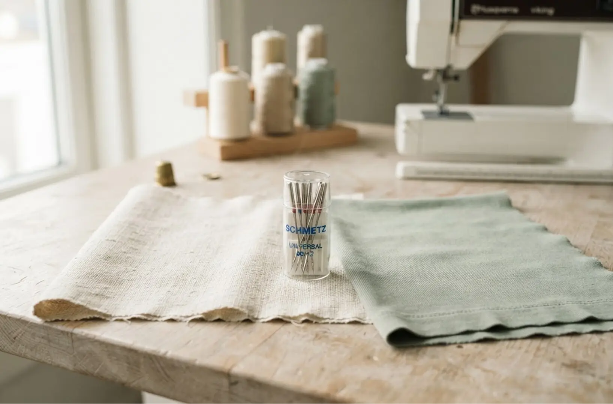
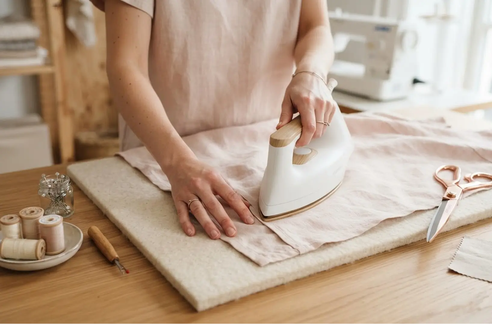
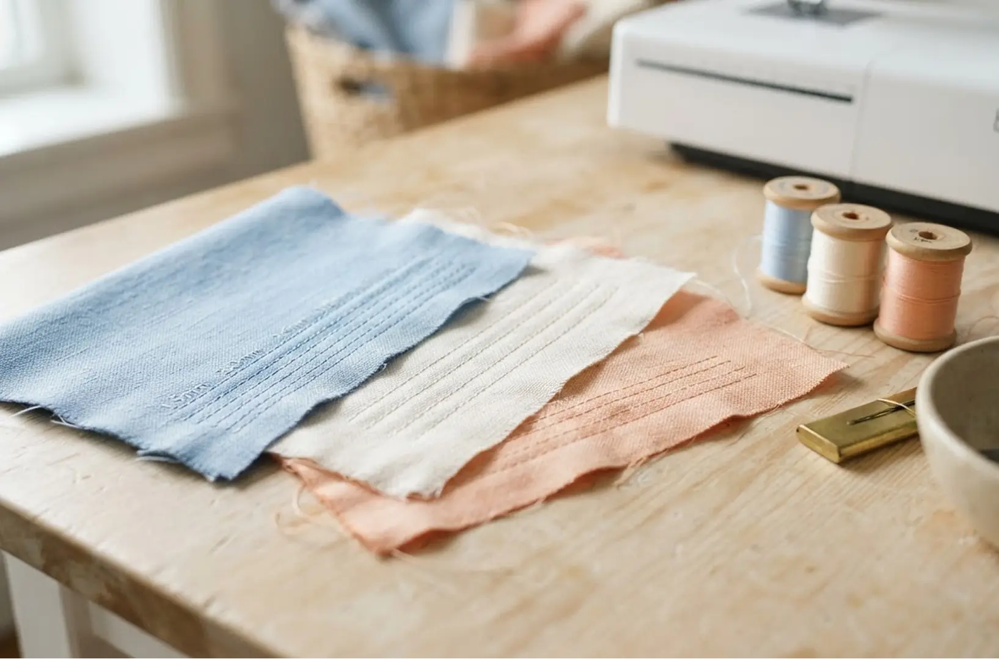
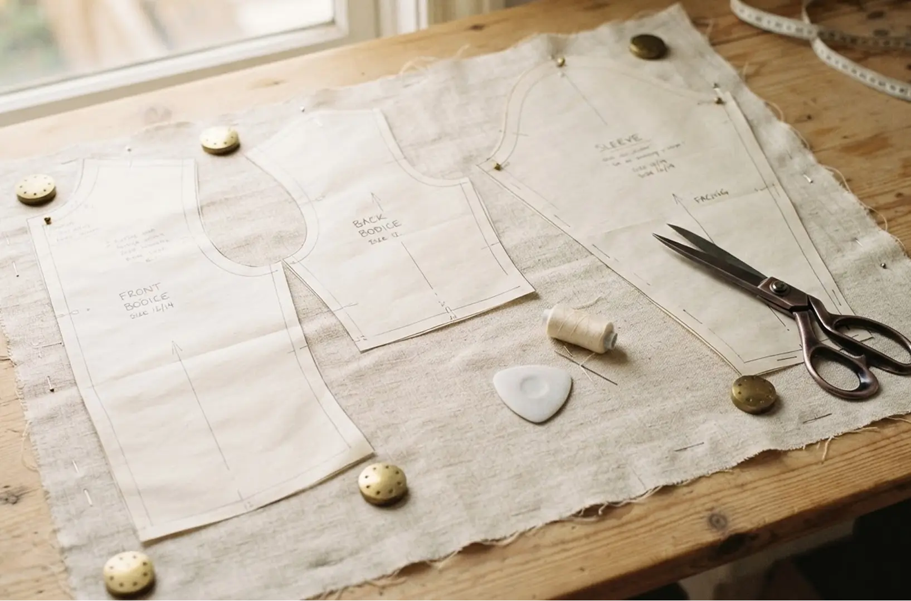

Vælg den rigtige nål
En nål, der passer til stoffet, giver pænere sømme og færre problemer undervejs. Brug en universalnål til almindeligt vævet stof og en jerseynål til strækbare materialer. Skift nålen regelmæssigt, og test altid på en stofrest, før du syr i projektet.

Pres for et professionelt resultat
Et strygejern er et af de vigtigste redskaber ved symaskinen. Pres sømmene efter hvert trin i stedet for at vente til sidst. Brug den rette temperatur, og læg eventuelt et klæde mellem strygejern og sarte materialer.

Test søm og trådspænding
Sy et par prøvesømme på en stofrest, før du går i gang. Tjek stinglængde, trådspænding og hvordan sømmen ser ud på begge sider. Små justeringer på prøvestykket kan spare dig for at sprætte op senere.

Klip og markér med omhu
Præcis klipning gør resten af syarbejdet meget lettere. Læg mønsterdelene efter trådretningen, og fastgør dem med nåle eller mønstervægte. Overfør markeringer tydeligt med skrædderkridt, så delene samles korrekt.